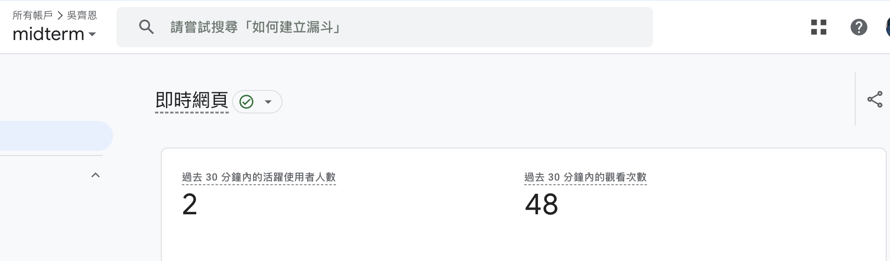
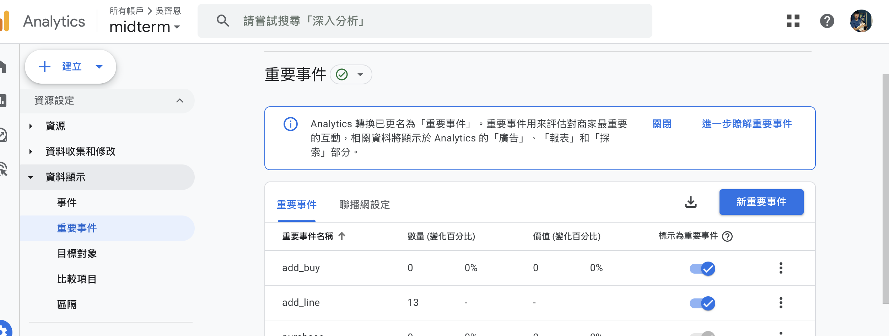
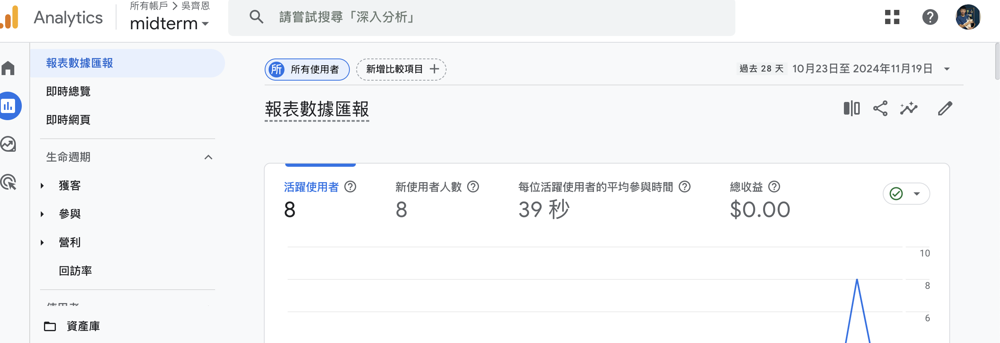

GA圖片



1-請問：反映積極參與網站瀏覽的user人數參數是？ (瀏覽超過10秒或在網站內切換網頁)
user_engagement
2-請問：初次瀏覽網站人數的參數是？
first_visit
3-請問：網站的總訪客數量參數是？
session_start
4-請問：電商衡量訪客在電商網站上完成購買等特定重要行為的比例，它反映了訪客轉化為顧客的成功程度，是評估網站績效和行銷活動成效的重要指標，請問這個是什麼指標？
電商網站GA4的轉換率
5-請問：上述這個指標的英文是什麼？
Conversion Rate
6-請問：上述這個指標的公式是什麼？
購買轉換率 = (購買重大事件數量 / 總訪客數量)*100%
7-請問：請你根據上面的3個事件截圖裡面的數值，請計算網站的這個指標的數值是？
購買轉換率 = (13 / 8)*100%=162.5%
This standards compliant, simple, fixed width website template is released as an 'open source' design (under the Creative Commons Attribution 3.0 Licence), which means that you are free to download and use it for anything you want (including modifying and amending it). If you wish to remove the 'ARaynorDesign' link in the footer of the template, please contact me first, but other than that...
Place your heading here

This website template uses the fancybox jquery tool to enhance the website, click on the image to the right to see.
Ut tincidunt, ante vel fermentum iaculis, turpis sem pulvinar diam, sit amet ullamcorper nibh dui ac nibh. Class aptent taciti sociosqu ad litora torquent per conubia nostra, per inceptos himenaeos:
Vestibulum tempus urna vitae neque vehicula sit amet tristique felis ultrices. Phasellus eu laoreet mauris. Integer sit amet ante nec ipsum euismod hendrerit et eget sapien. Duis velit ante, semper nec dapibus adipiscing, pellentesque vitae orci. Etiam adipiscing, justo ut faucibus placerat, neque libero accumsan ipsum, non pellentesque ligula nibh id justo. Aenean tellus nisl, bibendum vitae sollicitudin id, faucibus ut mi.
Vestibulum tempus urna vitae neque vehicula sit amet tristique felis ultrices. Phasellus eu laoreet mauris. Integer sit amet ante nec ipsum euismod hendrerit et eget sapien. Duis velit ante, semper nec dapibus adipiscing, pellentesque vitae orci. Etiam adipiscing, justo ut faucibus placerat, neque libero accumsan ipsum, non pellentesque ligula nibh id justo. Aenean tellus nisl, bibendum vitae sollicitudin id, faucibus ut mi.